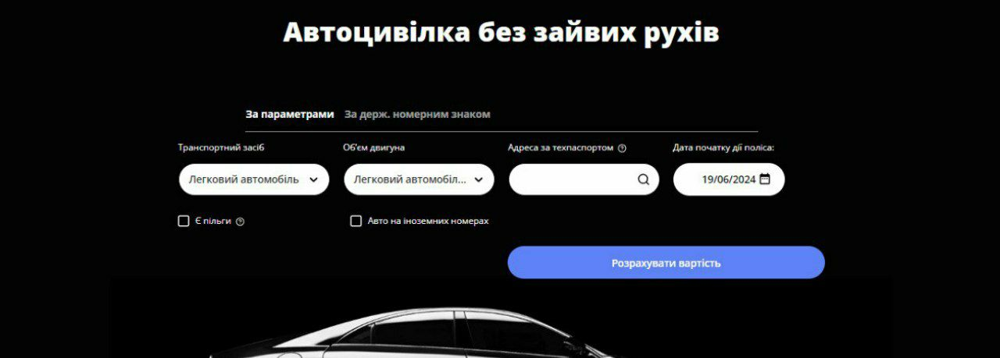
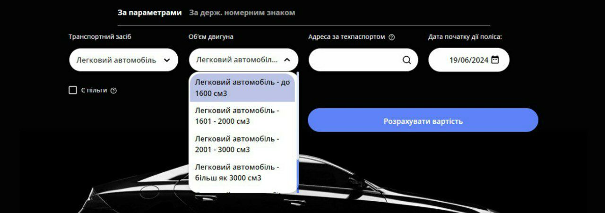
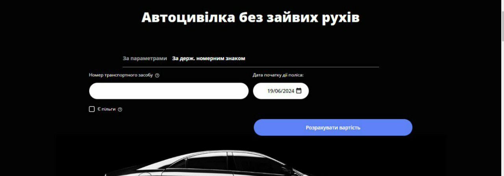
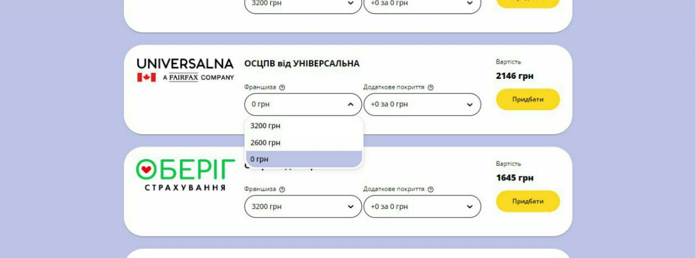
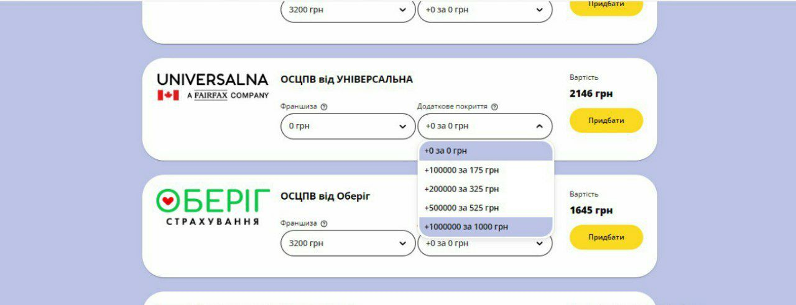
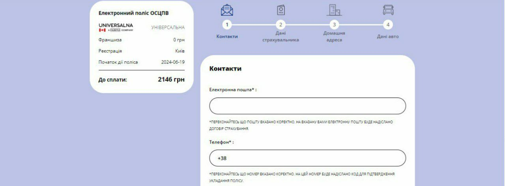
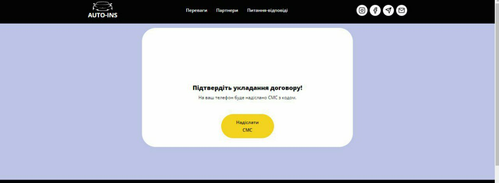

Як оформити страховку на авто?
Оформити автоцивілку онлайн просто!
Вам знадобиться декілька хвилин!
За допомогою нашого калькулятора можна розрахувати вартість автоцивілки за параметрами або за номерним знаком автомобіля.
При розрахунку за парметрами.
Оберіть тип автомобіля та внесіть місто прописки власника яке вказано в свідоцтві про реєстрацію транспортного засобу.
За номерним знаком
Рекомендуємо саме цей спосіб розрахунку, оскільки деякі компанії враховують вік автомобіля, водійський стаж та інші дані.
Оберіть франшизу за вашими потребами.
Рекомендуємо збільшувати суму покриття по майну, оскільки стандартних 160 000 (на 2024 рік) може не вистачити при ДТП з дорогим автомобілем.
Заповніть коротку анкету.
Введіть код 6 цифр отримані в повідомленні.
Якщо ви обрали додаткове покриття, необхідно підтвердити його другим кодом.

Ці коди приходять смс повідомленням на вайбер або на вайбер в бізнес чати. Вам потрібні перші 6 цифр
Сплатіть поліс онлайн і отримайте його на електронну пошту.
В разі виникнення запитань ми завжди на зв'язку!
Переваги онлайн-оформлення:
Економія часу:
Вам не потрібно їздити до офісу страхової компанії та стояти в чергах.
Порівняння пропозицій:
Ви можете швидко та легко порівняти ціни та умови різних страхових компаній.
Цілодобова доступність:
Оформити поліс можна в будь-який час доби, 7 днів на тиждень.
Без комісій:
Ви платите лише за сам поліс, без жодних додаткових комісій страховим агентам.
Зручний калькулятор:
З нашим онлайн-калькулятором ви можете швидко та легко розрахувати вартість поліса.
Не зволікайте, оформіть автоцивілку онлайн вже зараз!
Застрахуйте свою відповідальність – будьте впевнені на дорозі!